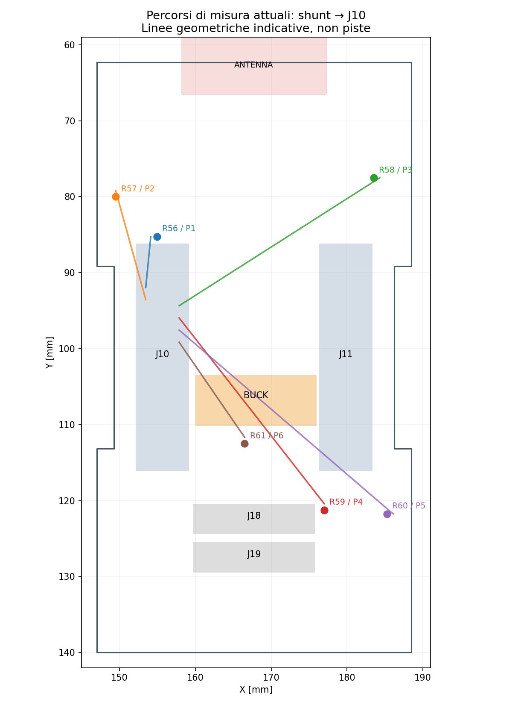

3 novembre 2026 · Analisi dei file CAD salvati · Proposta elettrica non applicata
La Backbone deve conservare una base passiva di misura utilizzabile da moduli di precisione diversa. L’Expansion AG32 è un esempio, non il limite progettuale dell’interfaccia. Non si impone una portata in ampere né una precisione inventata: si separano gli errori strutturali evitabili dai limiti di shunt, conversione, temperatura e rumore, che ogni modulo dovrà qualificare.
Confrontati i PCB e le netlist esportate dagli schematici carrier e Expansion: nessuna differenza sulle connessioni delle piazzole. Entrambe le schede hanno zero piste e zero via. Le distanze seguenti sono segmenti retti fra centri delle piazzole, quindi limiti inferiori geometrici, non lunghezze di routing né misure elettriche.
| Porta / shunt 0,1 Ω | Contatti J10: N / PORT | Distanza shunt → J10: N / PORT |
|---|---|---|
| P1 / R56 | 7 / 8 | 6.73 / 7.02 mm |
| P2 / R57 | 11 / 12 | 14.91 / 15.23 mm |
| P3 / R58 | 14 / 16 | 31.37 / 30.45 mm |
| P4 / R59 | 18 / 19 | 31.07 / 34.57 mm |
| P5 / R60 | 22 / 23 | 37.17 / 38.81 mm |
| P6 / R61 | 26 / 27 | 15.21 / 18.68 mm |
R58–R60 richiedono già circa 30–39 mm prima di considerare gli ostacoli. Un percorso sense lungo non è automaticamente sbagliato: a bassa corrente il problema non è il suo solo valore resistivo, ma la condivisione con la forza, l’accoppiamento, il ritorno e il filtraggio. Questa disposizione non era stata ottimizzata per tali vincoli.

Contorno e ingombro buck indicativi; i collegamenti colorati non sono piste proposte.
Per ogni canale, il lato N_Ax collega MOSFET, switch ESP, shunt e un solo contatto J10. Sul modulo lo stesso contatto collega ingresso U17, uscita U19/DAC e I/O AG32. Quando il modulo eroga corrente, essa attraversa lo stesso contatto e parte del rame usati come riferimento di misura. Anche con un prelievo ben fatto sulla carrier, la misura include quelle cadute: non è Kelvin end-to-end.
Se il modulo osserva soltanto e tutta la corrente è generata sulla carrier, i contatti esistenti possono funzionare da sense con instradamento dedicato. Questo caso favorevole non copre DAC o pilotaggio digitale dal modulo. TI richiede prelievi indipendenti ai capi dello shunt: INA226, sezione layout.
Un resistore a due terminali può essere collegato con quattro piste. Non è indispensabile cambiare subito componente; rimangono però gli errori di terminali, saldatura e punto di prelievo. Un componente nativo a quattro terminali offre una definizione migliore. Vedere Analog Devices, confronto dei punti Kelvin.
Separare quattro funzioni per ogni porta: N_A come forza dal modulo; SHUNT_H e SHUNT_L come coppia di misura ai due capi del resistore; PORT_A come misura della tensione al connettore esterno. Il ritorno della corrente resta nel circuito di forza. Le due tracce sense non portano corrente del carico.
| Canale | J11 proposto SHUNT_H / SHUNT_L | Funzioni oggi su quei contatti |
|---|---|---|
| P1 | 26 / 27 | P_GATE_0 / N_GATE_0 |
| P2 | 28 / 29 | P_GATE_1 / N_GATE_1 |
| P3 | 31 / 32 | P_GATE_2 / N_GATE_2 |
| P4 | 33 / 34 | P_GATE_3 / N_GATE_3 |
| P5 | 36 / 37 | P_GATE_4 / N_GATE_4 |
| P6 | 38 / 39 | P_GATE_5 / N_GATE_5 |
Questa proposta mantiene tutti i 30 contatti GND, tutte le alimentazioni, le reti N_A/PORT_A e i tre contatti riservati. Le coppie sense sono vicine fra loro sul connettore. I MOSFET restano controllabili tramite U25/I²C sulla carrier, ma si perde il comando diretto dei gate dal connettore: non è quindi una modifica elettricamente trasparente. Se il comando diretto veloce dei gate deve restare disponibile, occorre un’interfaccia sense aggiuntiva oppure una diversa revisione dei contatti; tre pin liberi non bastano.
Sul modulo di esempio U17 va ai nuovi SHUNT_H, U18 ai nuovi SHUNT_L; U19 e gli I/O AG mantengono N_A; gli ADC di tensione mantengono PORT_A. I 12 contatti gate oggi sono esportati ma non collegati agli IC dell’Expansion, quindi la sua funzione prevista può essere conservata aggiornandone lo schema. È comunque una nuova revisione del contratto di interfaccia: non assumere compatibilità universale con moduli già costruiti.
Tabella completa della proposta. Per la carrier usare reti sense distinte, unite alla forza solo sul terminale corretto del resistore mediante un’impronta/net-tie verificata. Questo evita che router, zone o successivi aggiornamenti accorpino involontariamente i percorsi. Prima validare il land pattern e l’assemblaggio 0603: non dividere le piazzole alla cieca.
Il capo basso dello shunt e il contatto esterno non sono lo stesso punto fisico sotto carico. PORT_A deve prelevare la tensione al contatto prescelto; SHUNT_L sul resistore. Collegarli allo stesso ramo sense includerebbe o escluderebbe cadute diverse a seconda della misura.
J18 e J19 sono in parallelo: uno shunt misura la corrente complessiva delle due prese, non le due correnti individuali. Va definita la presa primaria per il sense di tensione. Anche la massa di riferimento deve essere prelevata vicino al DUT; una futura mezzanina differenziale può usare un contatto riservato per un ritorno sense dedicato, senza trasformarlo in un ulteriore ritorno di potenza. L’ADC single-ended attuale resta riferito alla massa del modulo. Nessuna disposizione sulla carrier elimina automaticamente le cadute dei cavi esterni: un vero remote-sense fino al DUT richiede cablaggio dedicato anche fuori scheda.
| Punto | Riscontro | Intervento raccomandato |
|---|---|---|
| INA226 VBUS | U16.8 e U16.9 sono entrambi su SHUNT_LOW_SELECTED, collegato a U18.3. È così nello schema e nel PCB, nonostante note storiche dicano VBUS a GND. | Se la tensione viene letta dagli ADC, separare VBUS dal ramo differenziale e verificarne la terminazione a GND secondo la modalità scelta; altrimenti prevedere una misura VBUS indipendente/bufferizzata. |
| Mux di corrente | U17.3 → U16.10: 6,38 mm; U18.3 → U16.9: 13,56 mm. Ron e leakage non sono nulli né perfettamente identici. | Raggruppare i due mux con INA, ingressi simmetrici e filtro differenziale locale dimensionato; verificare errori a 3,3 V, temperatura e assestamento. Non usare i dati Ron a 4,5 V come garanzia a 3,3 V. |
| DAC / R77 / bypass | U32 è a circa 29,4 mm dai terminali di R77; i due ingressi ADC RAW/LIMITED sono a 23,3 e 24,5 mm da R77. | Mettere R77, U32 e U19 in un gruppo analogico, U32 immediatamente accanto a R77. Prelevare RAW e LIMITED separatamente sui terminali del resistore. |
| Riferimento analogico | La rete di alimentazione analogica non risulta separata da VCORE; non c’è una rete di riferimento dedicata. | Verificare VDDA/VREF, disaccoppiamento e ritorni secondo il package AG32. Per un modulo preciso: riferimento/analogica curati sul modulo, piano GND continuo e separazione dei percorsi di corrente, non tagli indiscriminati della massa. |
Il pin VBUS dell’INA ha impedenza tipica 830 kΩ. A 3,3 V assorbe circa 4 µA: con una resistenza serie illustrativa di 100 Ω nel mux si ottengono circa 0,40 mV di caduta, equivalenti a circa 4 mA su uno shunt da 0,1 Ω. È un esempio calcolato, non una previsione esatta né una misura: il Ron reale a 3,3 V va caratterizzato. Fonti: TI INA226, Nexperia 74HC4051.
I sei PE0603FRF070R1L sono 0,1 Ω, 1%, 100 ppm/°C, 0,1 W. La calibrazione per canale può correggere la tolleranza iniziale, non annulla deriva, saldature o gradienti termici. Una variazione di 40 °C corrisponde a un termine TCR dell’ordine di 0,4%. Fonte: specifica Yageo.
| Grandezza ideale | Valore calcolato | Interpretazione |
|---|---|---|
| 1 mA su 0,1 Ω | 100 µV | 10 µV di offset rappresentano il 10% del segnale. |
| 100 µA su 0,1 Ω | 10 µV | Confrontabile con l’offset massimo INA non calibrato. |
| INA226: 2,5 µV / 0,1 Ω | 25 µA per codice | Risoluzione nominale, non accuratezza garantita. |
| ADC 12 bit a 3,3 V | 0,806 mV per codice | Rumore, riferimento e INL non inclusi. |
| DAC AG32 10 bit a 3,3 V | 3,22 mV per codice | La tensione al DUT risente anche del carico e dei mux. |
| Differenza RAW−LIMITED su R77 4,7 kΩ | 0,806 mV / 4,7 kΩ ≈ 0,171 µA | Scala di quantizzazione ideale, non precisione di corrente; due conversioni, offset e leakage aggiungono errore. |
Per le piccole correnti di stimolo è più sensato sfruttare il percorso R77 con bypass aperto e ingressi ben curati che aspettarsi grande precisione dal solo shunt 0,1 Ω. Con bypass chiuso la formula I=(RAW−LIMITED)/R77 non misura la corrente totale. Una futura mezzanina può usare guadagno maggiore, convertitori migliori o portate diverse: la carrier Kelvin evita errori di cablaggio, non rende illimitata la precisione.
Il datasheet AG32 indica DAC a 10 bit, carico resistivo minimo 5 kΩ con buffer attivo e limite capacitivo 50 pF nelle condizioni specificate. R77=4,7 kΩ seguito da un corto ideale non garantisce il requisito di carico; il bypass non è un driver di potenza. Fonte: AGM AG32, sezioni ADC/DAC.
Carrier: J10=(155,6625;101,15), J11=(179,8375;101,15), interasse 24,175 mm. Expansion: J10=(155,0;111,8), J11=(179,9;111,8), interasse 24,900 mm. Differenza 0,725 mm. Una traslazione/rotazione rigida non la corregge: il miglior allineamento dei 120 contatti lascia un residuo di 0,3625 mm per lato. I 117 contatti con reti significative corrispondono; i tre NC sono diversi solo per rappresentazione.
Mantenere fermi i connettori carrier bloccati. Aggiornare quelli della mezzanina al nuovo riferimento e ricontrollare sagoma, finestre, altezza, fori e collisioni della pila completa. Non basta traslare l’intero modulo. La verifica precedente della carrier non costituiva una verifica di accoppiamento della mezzanina dopo il posizionamento manuale.
Consultati MEZZANINE-V1.md, MEZZANINE-LAYOUT.md, EXPANSION-INTERFACE-V2.md, PASSIVES-0603.md, SHARED-INA-EXTERNAL-BUSES.md e AG32-SUPERVISOR.md. Molte note descrivono revisioni storiche: per questa analisi prevalgono le connessioni effettive verificate nei file salvati. Esempi: VBUS INA oggi non è a GND; i metadati degli shunt menzionano ancora BASE:0R, mentre la revisione mezzanina descrive shunt 0,1 Ω sempre montati. Uniformare la documentazione nella revisione esecutiva.